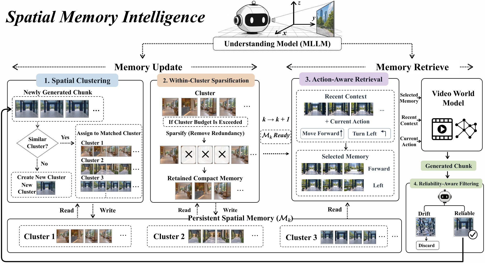

Paper Analysis
01 · The Task and the Missing Decision
视频世界模型根据当前动作和过去画面生成下一段。历史既包含有价值的环境证据，也包含重复视角和模型自己生成的错误。若把所有历史都保留，存储持续增长；若只按相似度取回，可能找到内容相似但位置不对的画面。SMI 将“历史应该怎样被管理”拆成可监督的决策任务。
这里的 memory item 是保留下来的视频 chunk，不是一个类别向量，也不是 LingBot-Map 的特殊 token KV。系统输入近期片段、候选历史、相机信息和计划动作，输出历史片段的选择与维护决定；视频生成主干随后输出新片段。MLLM 是管理器，不直接预测深度或修改三维表面。
论文针对 WorldPlay-1.5 中的 HY1.5-8B 与 Wan2.2-5B，管理器是 Qwen3.5-4B。理解模型在推理阶段持续运行，因此不能将本方法描述为“只在训练时使用 VLM 的免费语义先验”。
Paper Analysis
02 · Reading the Original Pipeline

Ying Yang et al. · Original figure, unmodified · Copyright retained by the authors; arXiv non-exclusive distribution license · Paper & Caption ↗
沿 Figure 2 右侧看：近期画面和动作进入 action-aware retrieval，得到与下一视图有关的历史片段；这些证据与近期上下文一起交给生成器。新片段生成后，先检查视觉可靠性，明显损坏的片段不进入持久记忆。
再看左侧：被接纳的片段根据空间内容归到已有簇，无法匹配则新建簇。同一簇积累足够多片段时，管理器检查哪些片段没有带来新的结构、遮挡关系或物体状态，删除冗余证据。底部的持久记忆因此是按空间归组的片段集合。
空间簇不是语义类别，也不是物体实例。“两段都出现建筑”不足以归到一起；附录提示词要求具体可见区域重合、局部布局兼容及视点连续。相机几何负责缩小候选范围，多模态判断负责进一步排除几何接近但实际证据不合适的观测。
Paper Analysis
03 · Retention Depends on Complementarity
每个簇选择一个代表片段作为 prototype。论文以其被同簇其余片段投影覆盖的平均程度来选择代表，再用新片段的相机位置与朝向筛选候选簇。管理器比较代表帧，输出是否属于同一局部视点范围。它没有宣称从语义相似度直接恢复物理坐标。
当簇大小达到阈值 T_s，触发去冗余，但 T_s 只是触发条件，并非删除后必须剩下的固定槽位数。提示词把覆盖程度与独有信息分开：即使其余画面覆盖很强，只要候选片段含有明确的新遮挡、动态状态或布局信息，仍应保留。
教学例子：A、B、C 看到同一片区域，A 与 C 已覆盖 B 的内容，B 可以删掉；若 B 唯一记录了遮挡后显露出的边缘，则应留下。这个判断的目标是互补证据，不是视觉差异越大越好，也不是同类内容只留一张。
因此 83.68% sparsity 表示被移除的条目比例，不等于显存减少 83.68%，更不等于全系统严格 O(1) 内存。新的空间簇仍可出现，簇内保留数也由内容决定；论文没有给出全局固定容量保证。
M_k = union_j S_j
p_j = argmax_(m in S_j) Cov(m, S_j minus {m})
|S_j| >= T_s => K_j = Sparse_MLLM(S_j)
K_j is a content-dependent subset, not a fixed-size slot array.Paper Analysis
04 · Retrieval and Admission Are Different
检索问的是“哪些旧画面支持下一步”，不是“哪张最像当前画面”。后退可能需要更宽覆盖，向左转可能需要左侧视野；提示词还区分动作方向与证据价值，相反方向拍摄的画面也可能提供有效空间支持。候选全部无用时允许返回空集合。
正文将几何预筛写成按空间重叠取 TopK；附录 B 的实际描述是先取相机位置最近的七个片段。两种描述并不完全相同。两主干都保留最近两个 chunk，附录 E 指定额外历史上限分别为 HY1.5 两个、Wan2.2 三个；通用提示词模板却写最多两个，应结合发布代码确认配置。
可靠性过滤只评价新生成画面是否适合成为未来证据。它不能证明画面符合真实三维世界，也不应因为场景稀奇而拒收。附录 B 写低于 6 分丢弃，附录 F 按不高于 6 分统计过滤标签，边界值 6 的规则有出入。笔记保留这一待核对项，不替作者选择实现。
区分这两步有实际意义：清晰画面也可能与当前任务无关；相关画面也可能已经崩坏。先保证证据可用，再讨论它是否值得读取，有助于避免错误生成经记忆反复传播。
Paper Analysis
05 · Training the Manager, Not the Generator
训练数据来自约一千条超过一分钟的实际模型生成轨迹，先人工筛掉低质量视频，再以 354 个跨操作人工样本提供示范。附录描述多个教师模型生成与检查标签，并人工清理异常结果。每条样本由多模态输入和结构化输出组成，例如属于哪个簇、KEEP/REMOVE、可靠性分数或候选编号。
HY1.5 和 Wan2.2 分别构造 63,911 与 30,936 条训练样本，以适配不同生成器的误差模式。管理器用标准自回归交叉熵学习这些输出，AdamW 学习率 2×10⁻⁵，全局 batch 64。监督目标是操作决策，不是语言特征蒸馏或几何误差。
梯度只在管理器的监督微调中更新其参数。生成器权重保持不变，运行时通过离散选择的历史片段改变输入条件；原文明确没有与世界模型端到端联合训练。所以后续生成质量不会直接沿这些离散决策反传到记忆管理器。
这对语义引导重建的启发是可以把“什么观测有用”转成可标注任务。但若目标是让未来几何 loss 学习写入前的语义融合，还需要另外设计可微接口；SMI 的结果本身没有验证这条梯度路径。
L_SFT(phi) = -(1/N) sum_n sum_l log p_phi(y_n,l | I_n, y_n,<l) I_n: multimodal operation input; Y_n: structured decision tokens World-model weights remain frozen.
Paper Analysis
06 · What the Experiments Actually Support
主评测用 100 条随机一分钟 rollout，另用 100 条含回访轨迹的 rollout 计算往返对应画面的 PSNR 与 LPIPS。PSNR 越高、LPIPS 越低越好，但衡量的是生成视图之间的复现一致性，不是相对真实深度的几何误差。VBench、模型盲评和 20 人用户研究提供其他角度的证据。
下表取主表中直接相关的数字并四舍五入。HY1.5 改善较明显，Wan2.2 的回访指标收益较小；后者背景一致性还从 0.930115 降到 0.917329，因此不能写成所有维度都提升。SMI 在两个主干的耗时分别为基线 1.38 和 1.31 倍，压缩并未抵消所有管理器开销。
最有解释力的消融是去掉空间聚类但仍执行稀疏化：HY1.5 PSNR 从 13.309 降至 11.050，LPIPS 从 0.555 升到 0.675。这个结果支持“先建立适当的比较集合，再判冗余”，但全部消融都保留动作检索，不能独立推出四个模块各自同等必要。
不微调管理器时，PSNR 为 9.396，虽然 sparsity 更高到 86.34%，效果却更差。这说明更狠地删历史并不是成功标准，也说明仅把一个通用 VLM 接进管理流程未必有效。
基线包括按原框架接口改编的 FramePack、MemFlow 等策略，不应把结果解释为这些原始系统整体被全面超越。模型评估器提供的是模型判断；要证明真实几何收益仍需深度、点云完整度、轨迹误差和同容量对照。
| Backbone / Method | Revisit PSNR ↑ | LPIPS ↓ | Removed Items | Latency |
|---|---|---|---|---|
| HY1.5 / Base | 12.479 | 0.603 | 0% | 1.00× |
| HY1.5 / SMI | 13.309 | 0.555 | 83.68% | 1.38× |
| Wan2.2 / Base | 11.435 | 0.596 | 0% | 1.00× |
| Wan2.2 / SMI | 11.565 | 0.588 | 82.21% | 1.31× |
Paper Analysis
07 · Connection to Streaming Reconstruction
与 ConceptFusion 的“把语义放进地图”相比，SMI 更接近“用理解改变历史管理”：语义与空间判断参与选择操作，真正改变后续模型能见到的证据。与 SMART 的固定槽位不同，它保留可回看的原始片段，付出更大的控制器成本，也没有严格固定全局容量。
对写入前语义融合方案，最值得借鉴的是互补性和可靠性两个目标：保存能补足后续视图的内容，避免反复保留同一信息或放大错误。它们可作为设计蒸馏目标与消融实验的依据，而不是直接宣称语义一定让六个 token 更好。
截至本次核查，官方仓库仍说明训练、推理和评估代码、权重、数据待发布；已有项目演示与方法图。上述机制和结果依据论文，尚不能用代码消除预筛、阈值和候选数的描述差异。
Discussion
Reading Questions
Is semantic similarity enough for clustering?
不够。原文要求可见区域和局部布局兼容，并把相机重叠当辅助线索。语义近似不能代替同一空间区域的证据。
Does sparsity imply bounded memory?
不意味着。稀疏率统计删掉多少条目，新簇和每簇保留数仍可增长；固定读取上限也不等于固定存储上限。
Where does the training gradient go?
交叉熵训练管理器输出操作标签，生成器冻结。后续生成误差没有端到端训练这套离散历史决策。
What is the most useful ablation?
去掉聚类但保留稀疏化导致明显回访性能下降，说明“和谁比较冗余”与删除规则本身一样重要。
References
One original method figure is reproduced for focused scholarly commentary with attribution. The arXiv distribution license is not a general reuse license. Read version: v2, revised October 8, 2026; first submitted October 1, 2026. Code, weights, and datasets were still listed as forthcoming in the official repository when checked.
Verified on 2026-10-23. Paper results refer to the linked versions. Repository references were checked on this date.